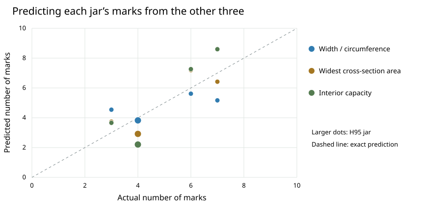

Could the marks measure length or area?
22 November 2026 · An exploratory prediction comparison on four primary jars. All models predict the same thing: how many marks should be on the omitted jar.
The recovered measurements do not force a volume reading. Cross-section area has the lowest error across all four cases; width predicts the additional H95 jar most closely. The original selected three jars instead favor volume. This is a scope-dependent pattern, not an identified ancient unit.
What “length” and “area” mean here: length is the vessel's maximum width (or equivalently its circumference after a constant conversion). Area is its widest circular cross-section. These are not measurements of a textile or a field.
Each model learns one common unit from the other jars, then predicts the omitted jar's mark count. Capacity gets its own fitted unit, just as length and area do; it is not forced to use the disputed 9.24L value. Predictions remain unrounded. A one-parameter constant-count baseline ignores geometry entirely.
All four jars: predict each from the other three

The same four objects are used for every primary model. Lower errors indicate a closer fit under the specified common-unit assumption, not a deciphered word or a probability of truth.
The additional four-mark H95 jar
Catalogue rim sign 034 has the proposed reading four. The alternatives below change what quantity the count describes; they supply no new spoken word. No sign 700 cup/measure is transcribed in that rim entry; separate body marks are not transcribed there.
The linear model predicts nearly four from its width. But its unit is unstable elsewhere: the four jars imply 11.9–20.5cm of diameter per mark. A successful H95 prediction alone does not establish a standardized ruler unit.
Change the scope; the preferred model can change
The five-case panel adds MD-1374 only by treating three vertical and three oblique marks as six equivalent counts. The six-case panel also accepts K-90's assumed, unlabelled photo scale. Neither is promoted to primary evidence. The height panel uses three objects with unambiguous exterior heights and adds a bounding-cylinder side-area proxy; it is not the same four-case panel.
Across 6,561 analyst-selected geometry/model stress configurations, winning models include: Widest cross-section area. These configurations are not probabilities or confidence intervals. All configurations are released.
The original three jars were selected in earlier research because their volumes match their counts. Their volume fit is development evidence. Four primary objects, uncertain source tables and scope changes do not establish a generally superior length/area interpretation.
Every dimension-bearing source case
MD-63-3 and MD-63-6 remain excluded because the source's 1? is not an established numeral reading. The full eight-row source table and every prediction are linked below.
What about accounts for cloth length or land area?
Those hypotheses are not tested by a jar's width or cross-section. The account could refer to something outside the jar. The bounded source checks recover linear-measurement artefacts and marked bricks, but no verified pairing of one of these accounts with an independently measured cloth length or plot area. Physical graduations on a ruler do not identify the unit of a separate inscription.
No language, pronunciation, field-area unit or textile-length unit is identified here. The next discriminating observation must connect an account to its measured subject and specify the unit before scoring a new case.
Design, scope and source checks · All model scores · Baseline predictions · All eight source cases · Every prediction · All stress configurations · Summary · Earlier capacity comparison